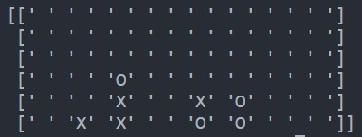

Explanation
Connect Four
A small project to learn myself to use Python, aswell as to excersise myself in matrix and adjacent values in them.
I use arrays in arrays to form matrices, and use some logic to check adjacent values of a value

Internal Database - A fitness project
I made a small project to keep track of exercises. The project would have the potential to make a full-on training program.
The core of the project is a database, which is made internally and is stored on the computer